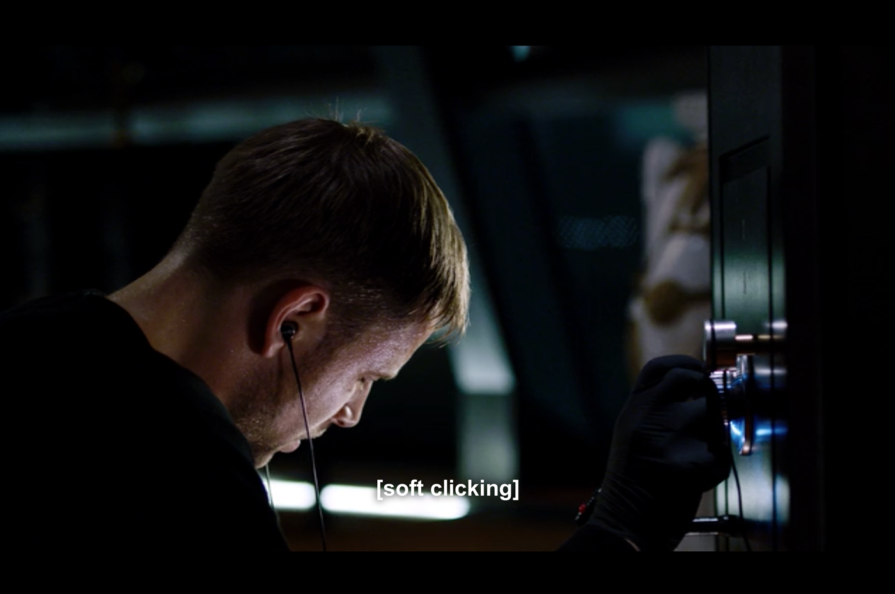
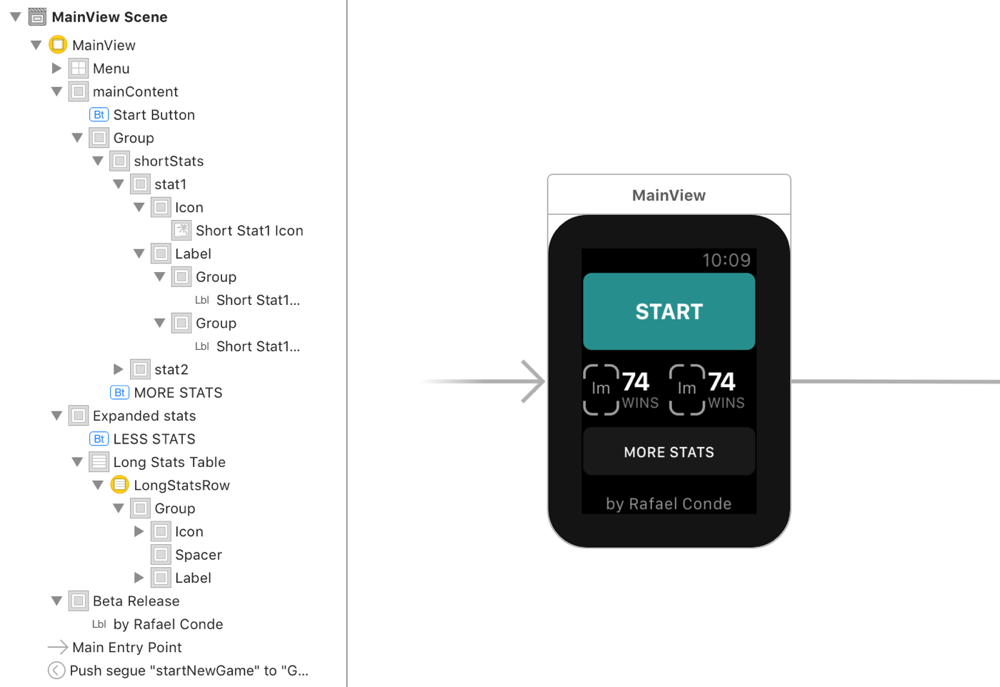
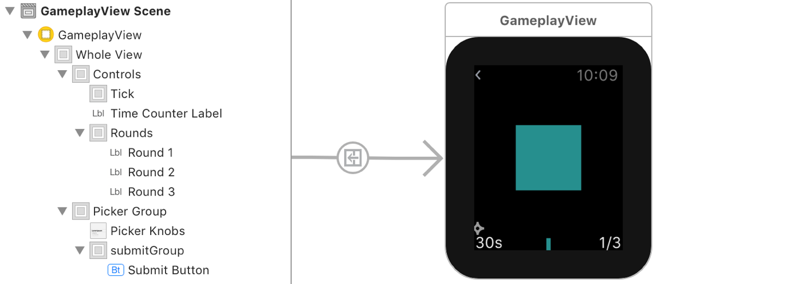
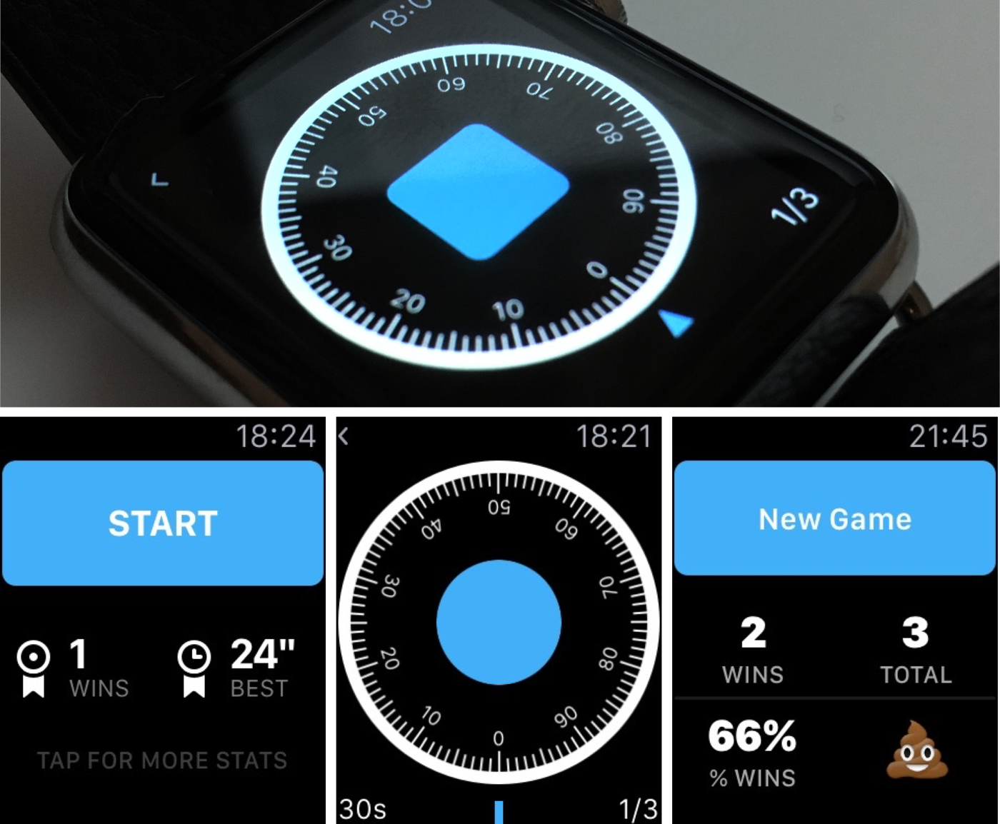
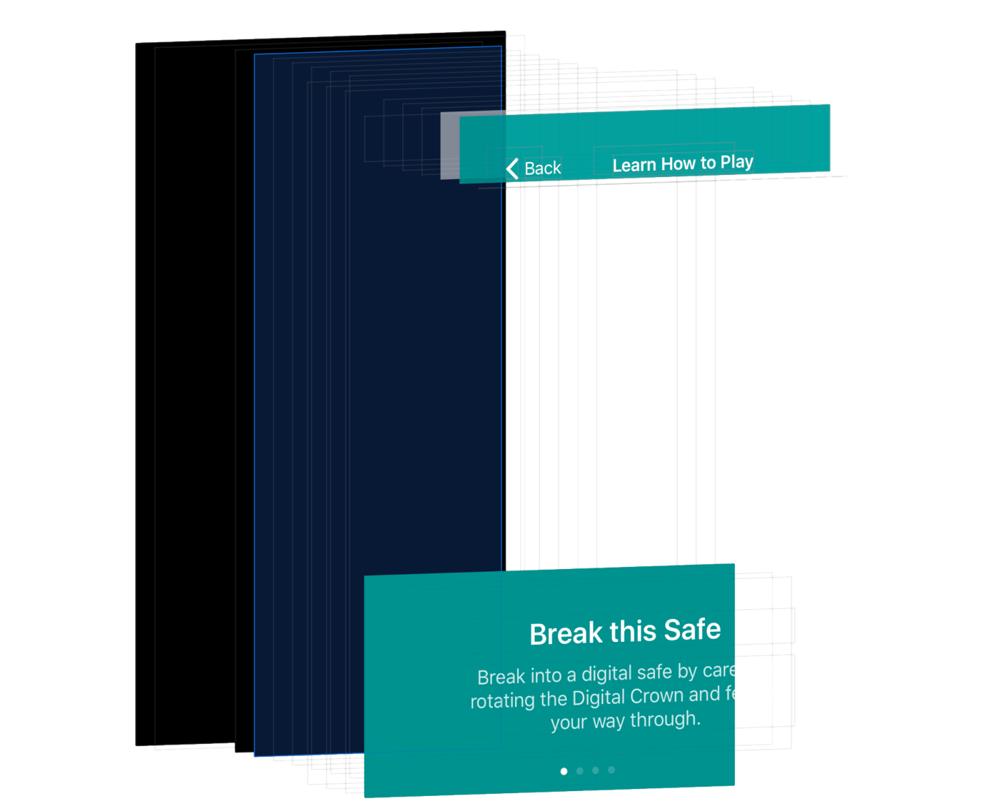

Case Study
Back in September 9, 2014, Tim Cook took the stage and announced the rumoured and highly anticipated watch. It was a brand new product category for Apple and its first foray into wearable devices.
I remember reading, not long after, John Gruber’s take on this new device, especially his remarks on the Digital Crown:
The digital crown feels amazing. It didn’t actually control anything on-screen on the demo watches I handled last week, but it has the most amazing feel of any analog controller I’ve ever used.
Apple Watch: Initial Thoughts and Observations, DaringFireball.net
Right there, the fact that this new input device was so new and simple to me, the precision and the feel it provided, it made me think of the analogy to a safe’s dial. And let me be honest, maybe it’s because I’m 25 years old, or maybe it’s because I’m from weird Europe, but I’ve never actually seen this type of safe in the real world, so the only reference I have is through the media, especially Hollywood, and 90% of the times the safe is being hacked.
The only use case for this analogy that I had in my head was to build a game where you have to hack into this safe, and the Digital Crown would be the dial.
Perfect.
Except for the fact that I didn’t have an watch, or that I had no idea how the game would actually work, or that I had close to no experience with iOS development, or, and this was just a small thing, you couldn’t really create native apps on this device.
So I put this idea on my that would be great pile of ideas and move forward.
You have no excuses now
Almost a year later, June 8, 2015, I took a trip to London.
Supply for the watch was still very short. Apple Store’s didn’t have any in stock and the only way you could get one was to order them online, in 2 or 3 countries. Not easy.
But, by some miracle, someone on Twitter was kind enough to let me know that there was this one store in London that had a couple watches in stock, you could in fact walk in the store and buy one these things. So I did.
Coincidentally, in that same week, Apple held the annual World Wide Developer’s Conference in San Francisco where they unveiled watchOS 2, and the ability to finally write native apps for this device.
The excuses I listed earlier, they were starting to get out of the way.
- I didn’t have an watch.
- You couldn’t really create native apps on this device.
- I had no idea how the game would actually work.
- I had close to no experience with iOS development.
2 out of 4.
In that same week, I started watching this amazing show on Netflix, it’s called Sense8 and in episode 1 this character named Wolfgang Bogdanow is “cracking the uncrackable” safe, using just sound, touch and extreme focus.
I immediately knew how the game would work – the player would turn the Digital Crown to rotate the dial, and thanks to watch’s haptic feedback, she could feel her way to the answer.
3 out of 4.
I was only missing someone with the coding skills to help me make this game a reality, and believe me or not, good developers are usually pretty busy. I’m a Designer with a Computer Science background, and except for some front end web development I never really worked as a programmer – but this was the perfect time to change that: It’s a cool product, there are no deadlines, a brand new device to code for, and a pretty simple one too (famous last words).
4 out of 4.
Embrace your constraints
Let me share with you some of the hoops that I had to go through when building Break this Safe.
This was the most constrained product I’ve designed, mostly by the nature of the device and its infancy as a platform, which made it the funnest as well.
The first wall I bumped into was a very surprising one. The most basic and crucial interaction of the game is to rotate this dial when the player rotates the Digital Crown, so the first thing I had to do was to rotate this image by 1% of 360 degrees for every tick of the Crown.
You can’t rotate images on watch.
These are the properties that you can actually change:
- Alpha
- Hidden
- Installed
- Horizontal
- Vertical
- Width
- Height
Pretty limited. The only workaround that I’ve found was to scroll through a list of 100 images, using watchOS 2’s new API, WKInterfacePicker and it’s Image Sequence style.
As you might imagine, this is pretty bad for performance, especially on a first generation watch that has pretty slow internals, and I’m not gonna lie – it took me months just to make this interaction to work. The app would simply crash when loading these 100 assets. So if you find yourself in a similar situation, here’s a couple of tips:
- Remove any transparency from your images, Apple recommends that you use a black background. Makes sense.
- Compress your assets, and then compress again. And again. I ended up using only 4 colours, with a total of 5 KB per image (I was lucky enough to afford this, since I was only using black and white, and 2 shades of grey to blend them). I’ve use an app called ImageAlpha to help me with this.
- Test on a real device. The simulator gave me no problems throughout most of the development journey, but when you ran it on a device, that’s when the fun begins.
Next up, you can’t have an object on top of another, or in other words every single element of your layout will be stacked, either vertically or horizontally, but you can’t have, for example, a button on top of a picker, or a label on top of an image.
What you do have is groups.
Groups are the only way of nesting elements, allowing us to create more interesting layouts, so for every group you can stack its elements inside in a different orientation for example. Here’s the main menu’s UI with all it’s groups and elements (take a closer look at the element’s hierarchy list on the left:
Another neat trick you can use, is to set an image as the background for a group, that’s how in the gameplay view I have a button on top of the dial. In this case the dial is a big group with a picker inside (that is hidden) and a button in the middle).
Which leads us to the next part…
Animations
Taking into account the properties that are at our control, mentioned above, I knew animations would be a very limited toolset for me, but still, I truly believe they add that extra layer of personality, care, and delight.
Break this Safe ships with only a handful of animated objects, I turned the dial back a couple of notches after a while to keep only what had purpose and usefulness.
Probably the most prominent animation is the Stats table.
The way I achieved the effect above is to have a Spacer Group, which is just a group with nothing inside it, and animate it’s width from x to 0. So in this example, each cell of the table view has an image (the icon, which I animated the opacity from 0 to 1 in 0.3s), then the Spacer Group, and finally another group with two labels. Easy.
What we do is then animate the width of the Spacer Group from 0.7 (relative to the container) to 0.0.
Because every element is stacked, the Labels will be pushed alongside the Spacer Group. Makes sense? Here’s the same animation, but this time the Spacer has a red background.
The best resource I’ve found on Layout and Animations for the watch is WWDC 2015’s Session 216 – make sure to check it out!
Gameplay
I am no game designer. Let’s make that clear.
But I am aware of that, so I designed the gameplay to be as automated as possible. And because of the constraints and nature of the device it had to be very simple and short.
You don’t want a level to be 10 minutes long, asking the player to hold her arm in the air for that long. It needs to be quick and painless. That’s the whole point of watch, isn’t it? Maybe you’re in line to pay for your groceries, that sponsor break while you listen to your favourite podcast kicks in, that’s where I want to position Break this Safe.
And remember the whole it took me 3 months to load 100 assets and not crash shenanigan? Yeah, I couldn’t really afford to add too much complexity to the gameplay view.
And the device and APIs at my disposal are so limited that the gameplay almost wrote itself. Let me give you an example:
In the first version of the game, you could select up to 3 different difficulty levels, you know, the classic Easy/Normal/Hard mode.
So I tried making more subtle haptic feedback for each mode, the harder the more subtle between the you are getting close tap, to the this is the answer tap. The problem with this approach is that you can’t design the taps, you have a limited number of different ones at your disposal, here’s what you have:
- Notification
- DirectionUp
- DirectionDown
- Success
- Failure
- Retry
- Start
- Stop
- Click
Now if you actually feel all of the above, you’ll notice that most are super obvious, the complete opposite of a subtle tap, and most of them are very distinctive between themselves, that’s their whole point, to convey a message just by a series of vibrations.
So after testing every possible combination of two, there was only a realistic pair that were close enough to need some attention from the player to tell them apart, but distinctive enough so that it’s actually possible to tell them apart (NotificationUp and NotificationDown are exactly the same for example, that’s what I was using in a newly created Impossible Mode in early versions. It was legitimately evil).
Another pesky little detail regarding the haptic feedback, is that each type has a sound effect associated with it, so it was kind of embarrassing when I shipped a version to my beta testers and they had let me know that every time they would pass by the answer, a little joyful sound effect would play, making it blatantly obvious.
I missed this because I use my watch exclusively with Silent Mode on, and this was one of the walls that I simply could not walk around.
Some of the things I tried to fix this was to play a silent audio file, which would prompt the player to connect headphone to her watch, try to play two haptic feedbacks at the same time, with the hope that it would cancel the first, nope.
So I had to give up, and present the player, with an alert box, on her first play, to turn Silent Mode on.
The last gameplay element to be introduced, a very important one, was the timer.
The first feedback I got from my beta testers was that the game was too easy, and I agreed, once the gameplay clicked with you, finding the answer was just to simple. So I had to introduced something to make it harder, and the solution was very obvious – a timer.
The player has 30 seconds to complete all 3 rounds, if the timer runs out before she does, it’s game over. If she makes one wrong guess, it’s game over.
Since adding the timer, the percentage of games won for me definitely decreased, I get around 80%, and I’m the one that built it so it definitely strikes a good balance in my opinion, and most importantly it opened a bunch of possibilities for future updates (hint hint).
Another obvious feature that I’ve left out was global leaderboards, or GameCenter support, and the reason for that is that is simply to easy to cheat your way to the top.
Remember that part where I have to suggest users to turn Silent Mode on? Yeah if the player wants she can turn Silent Mode off and it’s the easiest game on the planet. So the fact that every stats and leaderboards are personal, just for the player, it appeals to honesty, since cheating your way up is just cheating yourself.
iOS Counterpart
To ship an app for the watch you still have to write an iOS app, and in this case it wouldn’t need to be a complex one, but here’s what I needed it to have:
- Instructions – teach the user how to play the game, this would be overkill to ship in the watch app.
- Credits, About page, support links, etc…
- Some kind of In-App Purchases (more on this later)
- A way to read this very same Case Study – this journey was very important and an insightful one for me, and I, as a customer, love to read this type of articles, so it was important to me to have it in the app.
And so I did, there isn’t much to share here, but developing for iOS is in my opinion, and experience, way harder than for watchOS, which makes sense, iOS is a very matured platform and with a lot more complexity, so there’s just so much more to learn.
The thing that gave me a minor headache was definitely the background video.
You see, I wanted to have this video of the watch, and the game’s gameplay looping, it’s a subtle way to further familiarize the player on the game mechanics, and if by any chance you download the app but don’t have an watch, you could get a good idea of how the game would look (I purposely made the video real size). But the thing was that I wanted to video to loop, and while you navigate through the app, the video would not reload, it would just be there.
So long story short, the way I achieved this was to load the video in the main NavigationViewController, and have every child view have a transparent background. Of course nothing would be good without some nasty bugs, so I found out that if you have a view with a transparent background that out-of-the-box native animation between views in a Navigation View Controller, would stutter, and look pretty bad.
Here’s an example:
But it wasn’t hard to fix, I simply added the transitions myself, a basic change of opacity. Here’s how the final version of the iOS app looks like:

Business Model
I’ve had long discussions about how I would price the game with myself, but after listening to episode 18 of Under the Radar, a podcast about iOS Development hosted by my heroes Marco Arment and David Smith, I’ve decided to go with Free, with donations.
The huge factor that influenced me to take this route is the fact that there is no way to prevent anyone to buy the app, if the player doesn’t have an watch. Meaning that if the app would have an upfront cost, I would probably get a ton of emails from people that bought it and had no way to actually play it.
In-App Purchases were out of the table giving the way the game is built, at the moment I have no way to lock features and still be proud of the result.
Oh, and I hate ads.
So in the end I’ve opted to offer the game for free, with an optional tip jar (again, inspired by David Smith).
Closing remarks
Designing and building this game was the most fun I had in a long time, and a great way for me, a designer, to dip my toes in the programming world – the limitations of this platform were big eye openers and that feeling when you finally find a way around a problem you had, that feeling, is something else!
To be honest I have no big expectations or goals for this project, I genuinely hope people can have fun playing it and it would be a dream come true if I can justify continued development, I have some big ideas for the future.
Thank you so much for reading this, which to be honest is more of a journal than a case study, I hope you found it useful in some way.
– Rafael Conde
Free on the App Store